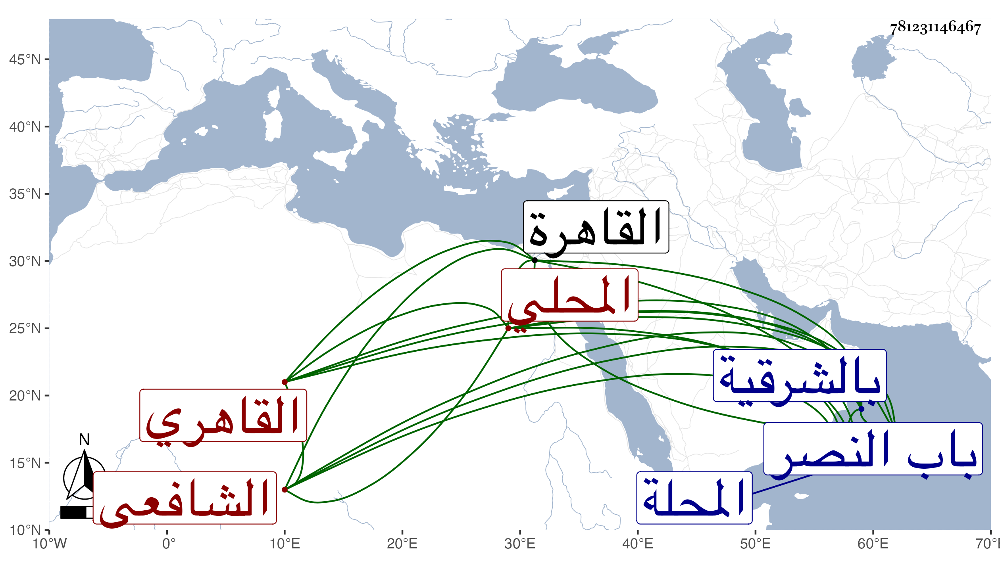

0902Sakhawi.DawLamic.ITO20230111-ara1.EIS1600.781231146467
Biography ID: 781231146467
1121
يعقوب بن محمد بن يعقوب الأتريبي ثم المحلي ثم القاهري الشافعي . أصله من أتريب بالشرقية وقدم المحلة فأقام تحت نظر أبي عبد الله محمد الغمري مع جماعته وحفظ القرآن واستمر معه حتى مات ، وانتمى بعده للشيخ مدين ثم صار بعد يجتمع مع ابن أخته محمد بن عبد الدائم وناله من الطائفتين بتردده إليه جفاء ومع ذلك فما انكف ، وقد أم بجامع الغمري بالقاهرة وتنزل في سعيد السعداء والبيبرسية وطلبه الشافعي وكان يتوجه إليه ماشيا بل لازم الحضور عند المناوي في الفقه وكذا أخذ عن غيره كابن قاسم والأبناسي وقرأ على البخاري بتمامه قراءة مهذبة محررة ، ولازم مجالسي في الإملاء بل كان ممن سمع على شيخنا، وتميز في العربية والفقه مع حسن التصور والمداومة على التلاوة والعبادة والتحري في الطهارة وصرف أوقاته في أنواع الطاعة بحيث كان فريدا بين الفقراء . مات في سحر يوم الجمعة ثاني عشرى جمادى الثانية سنة خمس وسبعين عن أزيد من ستين سنة بعد أن تعلل نحو سنة وتفتح في أعضائه أماكن وهو صابر محتسب ، وصلي عليه بعد صلاة الجمعة بجامع الحاكم ودفن بجانب قبر الزين عبادة بتربة معروفة بالشيخ مدين تجاه الكلبكية خارج باب النصر رحمه الله ونفعنا به .
